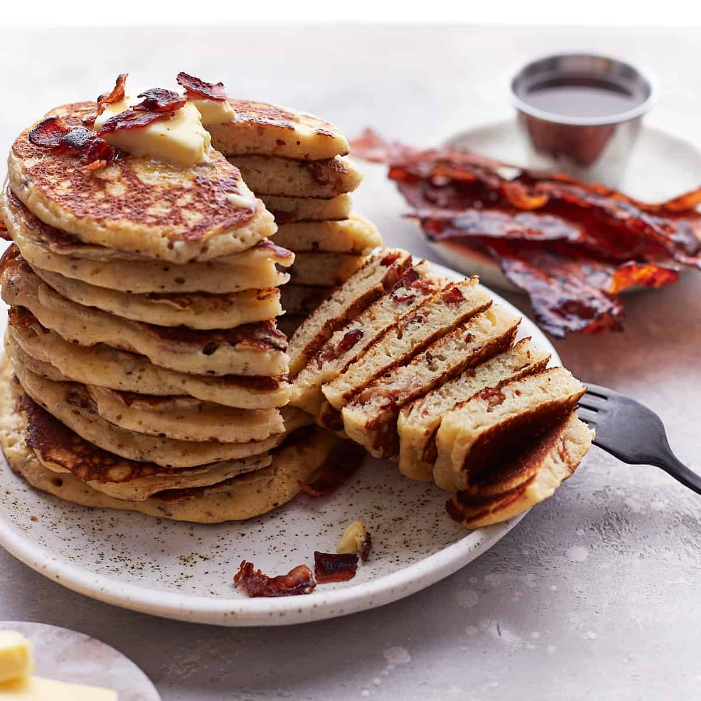

Make Bacon Pancakes for Breakfast !

Description
These savory bacon pancakes are quick and easy to make.
It's my favorite buttermilk pancakes recipe with crispy bacon crumbs added.
You only need 10 ingredients !
Ingredients
- 10 slices bacon
- 2 cups buttermilk, at room temperature
- 3 tablespoon maple syrup
- 2 teaspoon baking powder
Steps
- Preheat the oven to 200°F (100°C).
Line a baking sheet with foil and place inside the oven.
- In a large mixing bowl, whisk together the buttermilk, eggs, maple syrup,
and vanilla until combined.
Set aside.
- Heat a non-stick skillet over medium heat and grease with butter.
- Pipe whipped cream on top if desired.
- Serve immediately or store covered at room temperature for up to 1 day.